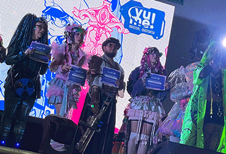

HARAJUKU DISTOPÍA:
IDENTIDADES
EN RESISTENCIA
¿Qué pasa cuando la dulzura lúdica del Decora choca de frente contra los paisajes de concreto industrial y la alienación digital? La respuesta no es el escapismo; es una declaración de guerra visual.
Este fin de semana, la Yume Convention fue el escenario de la pasarela y performance 'Harajuku Distopía: Identidades en resistencia', organizada por MEXICO DECADENCE. En este espacio, la moda urbana japonesa se transformó: desde el encanto de las mahou shoujo hasta propuestas futuristas de alto nivel. Cada modelo aportó su toque original para transportarnos a un universo distópico, demostrando que somos identidades en resistencia que buscan, ante todo, ser seres integrales.

// _PASARELA_PERFORMANCE
Cada pasador y cada cable de neón funciona como un escudo contra la monotonía de la ciudad. El exceso satura la mirada del espectador, arrebatándole el control del espacio visual.
01_ MAGIA, LEDS Y EXPRESIÓN
El bloque abrió con el paso de las mahou shoujo, quienes lucieron outfits llenos de color y magia. Exponiendo su verdadero ser en un mundo donde lo mágico carece de sentido para los demás, estas identidades le gritan al mundo: 'aquí estoy y me gusta sentirme mágicx'.
"No nos vestimos para ser consumidos por tu mirada; nos vestimos para intervenir tu realidad." ★
Después, la pasarela dio lugar al performance de Haru Nonell, quien portó un atuendo de príncipe astral que luego fue corrompido por el grupo de Lagunadelfos; ellxs, con prendas neón intervenidas, proyectaron un concepto divertido y lleno de color, pero con el firme mensaje de 'aquí estamos'.
Esto abrió paso a las estéticas futuristas: el cybergoth y el steampunk destacaron en la pasarela con accesorios LED. En un constante dinamismo, todos entrábamos y salíamos del escenario para demostrar que somos unión, pero a la vez
individuos; que somos caos, pero bajo nuestras propias reglas. Al cierre, tras entregar los reconocimientos a cada modelo, los espectadores se llevaron el recuerdo de un momento mágico, distópico, caótico e increíble.
ESCRITO POR
Jellyfish Galaxy